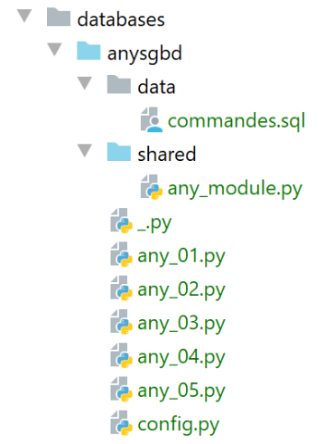

18. Ecrire du code indépendant du SGBD
Nous avons vu précédemment que dans certains cas il était possible de migrer simplement du code Python écrit pour le SGBD MySQL vers du code écrit pour le SGBD PostgreSQL. Dans ce chapitre, nous montrons comment systématiser cette approche. L’architecture proposée devient la suivante :

On souhaite que le choix du connecteur et donc du SGBD se fasse par configuration et ne nécessite pas de réécriture du script. On rappelle que cela n’est possible que dans les cas où le script n’utilise pas d’extensions propriétaires du SGBD.
L’arborescence des scripts sera la suivante :

Les scripts [any_xx] reprennent les scripts déjà étudiés pour les SGBD MySQL et PostgreSQL. Nous n’allons pas tous les reprendre. Nous allons nous concentrer sur le script [any_04] qui est le plus complexe. On rappelle que ce script exécute les commandes SQL du fichier [data/commandes.sql] suivant :
Nous avons modifié la ligne 2 pour que la commande ait le même comportement pour les SGBD MySQL et PostgreSQL si la table [personnes] n’existe pas.
Le script [any_04] est configuré par le script [config.py] suivant :
La nouveauté réside dans les lignes 18-43 :
- ligne 20 : [sgbds] est un dictionnaire avec deux clés [mysql] ligne 21 et [postgresql] ligne 32 ;
- la valeur associée à ces clés est un dictionnaire donnant les éléments permettant la connexion à un SGBD :
- lignes 21-32 : les éléments d’une connexion au SGBD MySQL ;
- ligne 23 : le connecteur Python à utiliser ;
- ligne 25 : le module contenant des fonctions partagées ;
- lignes 26-30 : les identifiants de la connexion ;
- lignes 32-41 : les mêmes éléments pour une connexion au SGBD PostgreSQL ; Le script [any_04] qui exécute le fichier de commandes SQL [data/commandes.sql] est le suivant :
Commentaires
- lignes 1-4 : on récupère la configuration [config] de l’application ;
- lignes 10-21 : le script s’appelle avec deux paramètres [sgbd_name with_transaction] :
- [sgbd_name] : le nom du SGBD à utiliser ;
- [with_transaction] : True si on veut exécuter le fichier de commandes SQL au sein d’une transaction, False sinon ;
- lignes 10-25 : les paramètres sont récupérés et vérifiés ;
- ligne 28 : la configuration du SGBD choisi ;
- ligne 30 : on importe le connecteur du SGBD choisi. On utilise pour cela la bibliothèque [importlib] (ligne 7) qui permet d’importer un module dont le nom est dans une variable. Le résultat de l’opération [importlib.import_module] est un module. Ainsi après la ligne 30, tout se passe comme si l’instruction exécutée avait été :
Ceci va nous permettre d’écrire ligne 52 [sgbd_connector.connect] où on utilise la fonction [connect] du module [sgbd_connector]. Il faut se rappeler ici que [sgbd_connector] est soit [mysql.connector] ou [psycopg2]. Ces deux modules ont la fonction [connect]. De même, ligne 60, on peut écrire [sgbd_connector.InterfaceError, sgbd_connector.DatabaseError].
- ligne 32 : on importe le module des fonctions utilisées par le script ;
- ligne 58 : on exécute la fonction [execute_file_of_commands] du module des fonctions utilisées par le script. Par rapport aux versions précédentes, la signature de cette fonction a un paramètre de plus, le premier. On passe à la fonction le connecteur Python [sgbd_connector] qu’elle doit utiliser ;
- en-dehors de ces points, le script [any_04] reste ce qu’il était dans les versions précédentes ; La bibliothèque de fonctions [any_module] est la suivante :
Le paramètre [sgbd_connector] a été utilisé ligne 31 pour préciser le type des exceptions interceptées.
L’exécution du script [any_04] avec les paramètres [mysql false] donne les résultats suivants :